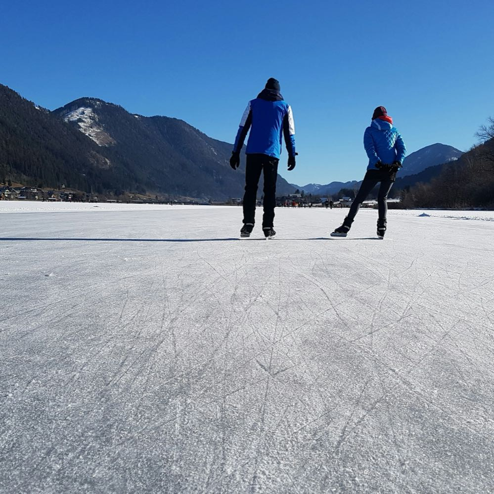

Europa's grootste professioneel geprepareerde natuurijsoppervlakte — als de winter meewerkt.
De Weissensee is een van Europa's bekendste bestemmingen voor natuurijsschaatsen, ook vanuit Nederland. Het bergmeer ligt op circa 930 meter hoogte en heeft een oppervlakte van 6,5 vierkante kilometer. Bij gunstige winterse omstandigheden verandert een deel van het meer in Europa's grootste professioneel geprepareerde natuurijsoppervlakte.
De ijsmeester en zijn team onderhouden de vrijgegeven banen intensief. Afhankelijk van het weer en de ijsveiligheid zijn er kortere, beschutte rondes of langere schaatsroutes beschikbaar. Onder optimale omstandigheden kan een ronde tot circa 25 kilometer worden uitgezet.
Deze reis is anders dan Orsa en Falun: er gaat geen begeleider van Novakse mee op het ijs. De banen worden ter plekke onderhouden en vrijgegeven door de lokale ijsmeester.